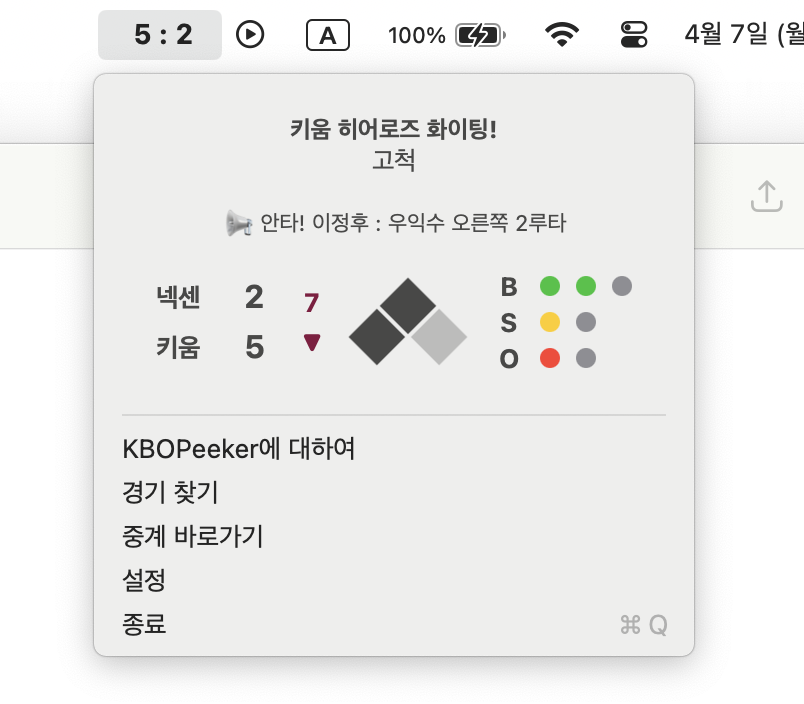

KBOPeeker란?
KBOPeeker는 KBO 리그 실시간 경기 상황을 추적하여 macOS 메뉴바에
표시해주는 앱입니다.
별도 창 없이 메뉴바에서 타자별 상황, 점수,
이닝 정보를 실시간으로 확인할 수 있습니다.
일이나 공부 때문에 중계를 볼 수 없을 때에도 경기의 흐름은 놓치고
싶지 않아서 만들었어요. 😊

설치 및 사용 방법
- 다운로드 버튼을 클릭해 KBOPeeker.dmg 파일을 받습니다.
-
다운로드한 파일을 마우스 오른쪽 클릭하여
"다음으로 열기 > DiskImageMounter(기본)"을 선택해 열어주세요. - KBOPeeker 아이콘을 Applications 폴더로 드래그해 설치합니다.
- 설치 후 Launchpad나 Spotlight에서 "KBOPeeker"를 검색해 실행하세요.
-
첫 실행 시 "확인되지 않은 개발자" 경고가 나타나면:
- 응용 프로그램 폴더에서 KBOPeeker를 우클릭 → "열기"를 선택하세요.
그러면 macOS가 해당 앱 실행을 허용할지 묻는 창이 뜹니다.
- 또는, 시스템 설정 → 개인정보 보호 및 보안으로 이동한 뒤
하단에 있는 "보안" 항목에서 "열기"를 클릭해 실행할 수 있습니다.
이 과정은 최초 1회만 진행하면 되며, 이후에는 자유롭게 실행할 수 있습니다.
자세한 방법은 Apple 공식 가이드 를 참고하세요.

로그인 시 자동 실행 설정 방법
KBOPeeker는 macOS 로그인 시 자동으로 실행되도록 설정할 수 있습니다.
이 기능을 사용하면 Mac을 켤 때마다 KBOPeeker를 따로 실행하지 않아도
됩니다.
- 메인 화면 하단의 설정 버튼으로 설정 창을 엽니다.
- 설정 창 하단의 "로그인 시 자동 실행 설정" 버튼을 클릭합니다.
-
macOS의 시스템 설정이 열리면, + 버튼을 클릭한 뒤
'응용 프로그램' 폴더에서 KBOPeeker를 선택하여 추가합니다. -
목록에 KBOPeeker가 추가되면 설정이 완료됩니다.
이제 Mac을 켤 때 자동으로 KBOPeeker가 실행됩니다.
배포 일지
v1.0.0 - 2025.04.07
첫 공식 릴리스입니다.
KBOPeeker 1.0.0.dmg 다운로드v1.0.1 - 2025.04.09
- 점수 옆에 구단 별 엠블럼을 표시할 수 있도록 수정했습니다.
- 메인 뷰에 현재 투수와 타자의 이름을 표시하도록 하였습니다.
- 실시간 이벤트 대기 중임을 표현하기 위해 인디케이터를 추가하였습니다.
- "KBOPeeker에 대하여" 버튼을 설정 창으로 옮겼습니다.
- 설정 변경 시, 저장 완료 메시지가 표시되도록 개선했습니다. KBOPeeker 1.0.1.dmg 다운로드
v1.0.2 - 2025.04.16
- 스코어보드 기능을 추가하였습니다.
- 경기 시작 시간에 맞춰 자동으로 경기를 탐색하도록 개선했습니다. KBOPeeker 1.0.2.dmg 다운로드